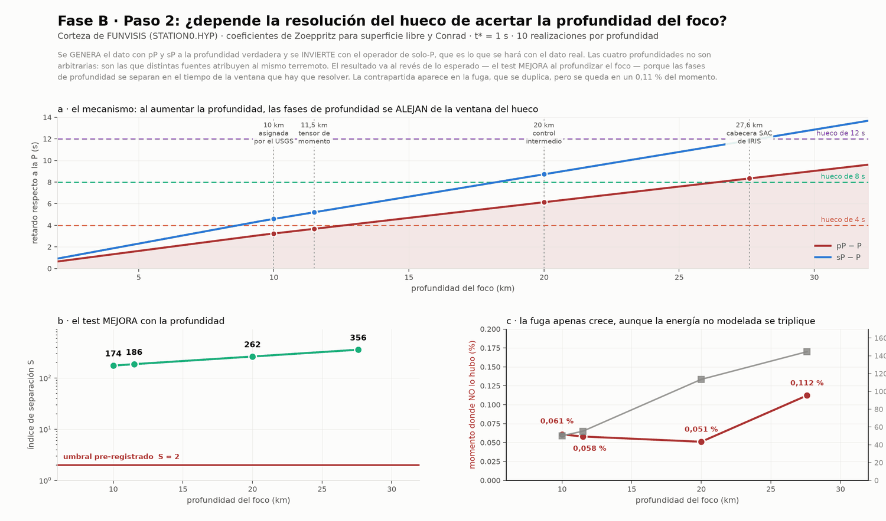
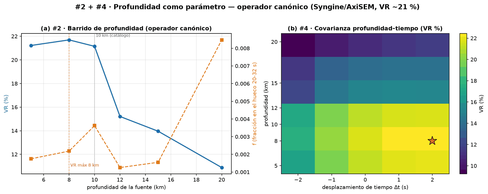

Método · la profundidad de la fuente — La Guaira, 24-jun-2026
Tres cifras para el mismo foco —10, 11,5 y 27,6 km— y ninguna medida. Por qué eso importa para las fases pP y sP, y la prueba de que el hueco entre las dos rupturas no se apoya en acertarla.
Toda la inversión se apoya en la onda P y en las reflexiones que la siguen de cerca. El retardo de esas reflexiones depende casi solo de a qué profundidad está el foco — y esa profundidad, en este terremoto, no es un valor medido. Había que comprobar, por tanto, si el resultado depende de acertarla.
El número que se cita habitualmente, 10 km, es una asignación del analista, no una profundidad resuelta por los datos. Otros dos productos del mismo terremoto dan otras dos cifras:
El valor que acompaña a us6000t7zc. Asignado por el analista cuando la profundidad no queda restringida.
La que devuelve la inversión del tensor, sobre los mismos registros.
La que viaja en la cabecera de las propias formas de onda descargadas. Casi el triple que la del catálogo.
Un ejercicio independiente con FMNEAR sobre la red local, dejando la profundidad libre, la lleva de 4,9 a 20 km sin mejorar el ajuste ni el índice de calidad. Con el evento mar afuera y las estaciones solo en tierra, la geometría no permite constreñirla. Tres fuentes, tres respuestas, y ninguna con autoridad sobre las demás.
Poco después de la P directa llegan a cada estación lejana dos ondas más que salieron del mismo foco hacia arriba, rebotaron en la superficie libre encima de la fuente y emprendieron el mismo camino: son pP y sP. Su retardo respecto a la P mide, casi en exclusiva, la profundidad: d(pP−P)/dh ≈ 0,30 s/km.
Ahí está el riesgo. A 10 km, pP llega a 3,2 s y sP a 4,6 s — dentro del propio pulso de la fuente, donde un operador que no las modele puede confundirlas con estructura temporal, es decir, con momento que nunca se liberó. Y el hueco que hay que resolver dura unos pocos segundos. Conviene subrayar el reparto de culpas: el modelo de corteza apenas influye (+0,05 s); la profundidad, sí.

La expectativa razonable era que los 27,6 km rompieran la prueba. Ocurre lo contrario: S sube de 174 a 356 al profundizar el foco. Ante un resultado que contradice la expectativa, el reflejo correcto es buscar el error; pero aquí la explicación es física y sencilla.
A 10 km, pP y sP caen a 3,2 y 4,6 s, dentro del pulso. A 27,6 km se van a 8,3 y 11,9 s, fuera de la ventana: el operador las trata como energía que sencillamente no ajusta, y no como momento.
La contrapartida aparece donde debe, y hay que decirla: la fuga se duplica a 27,6 km (0,112 % frente a 0,051 %) y la energía no modelada se triplica (145 % frente a 50 %). El ajuste empeora mucho; lo que no se degrada es la capacidad de separar los dos escenarios. Es decir: el hueco no se sostiene sobre acertar la profundidad.
La misma pregunta, hecha al registro observado con el operador canónico y con las funciones de Green re-descargadas a cada profundidad:

Son dos problemas distintos, y el segundo es peor. En el catálogo de réplicas, 365 eventos —el 21 %— tienen z = 5,0 km exacto, y la proporción se repite en la sismicidad histórica (1 211 de 5 234). Eso no es una capa sísmica: es el valor por omisión del localizador cuando la profundidad no queda restringida. Por eso el visor 3-D los dibuja huecos y en gris y trae una casilla para ocultarlos, por eso no se pueden ajustar planos focales a esas profundidades, y por eso el siguiente paso es la relocalización relativa de la sección 08 de la portada. El eje horizontal, en cambio, sí es utilizable.
No sabíamos a qué hondura arrancó el terremoto. Tres fuentes serias daban tres cifras distintas —10, 11,5 y 27,6 km— y ninguna la había medido: una la puso a mano un analista, otra salió de un cálculo y la tercera venía escrita en la cabecera de los ficheros. Eso incomoda, porque de la hondura depende cuándo llegan a las estaciones lejanas los ecos que el terremoto rebota contra la superficie del mar, y un eco a destiempo puede confundirse con energía que el terremoto nunca liberó.
Así que se probaron todas. Y salieron dos cosas. La primera la dice la curva azul de la figura de arriba: el registro se explica mejor cuando se supone el foco somero —entre 5 y 10 km— y claramente peor a medida que se hunde. Es decir, el dato tiene opinión propia sobre algo que nadie había medido, y su opinión es que el terremoto fue poco profundo.
La segunda es la que de verdad importa, y es la línea naranja: se mantiene abajo y plana a todas las profundidades. Esa línea mide cuánta energía aparece en el tramo silencioso entre las dos rupturas. Que no se mueva significa que el silencio sigue ahí se suponga la hondura que se suponga. Dicho de otro modo: la conclusión central de este trabajo —que hubo dos terremotos y no uno solo estirándose— no se apoya en un número que nadie midió. Y esa es exactamente la clase de comprobación que hay que hacerle a un resultado antes de creérselo.
{kind=link}
{kind=link}